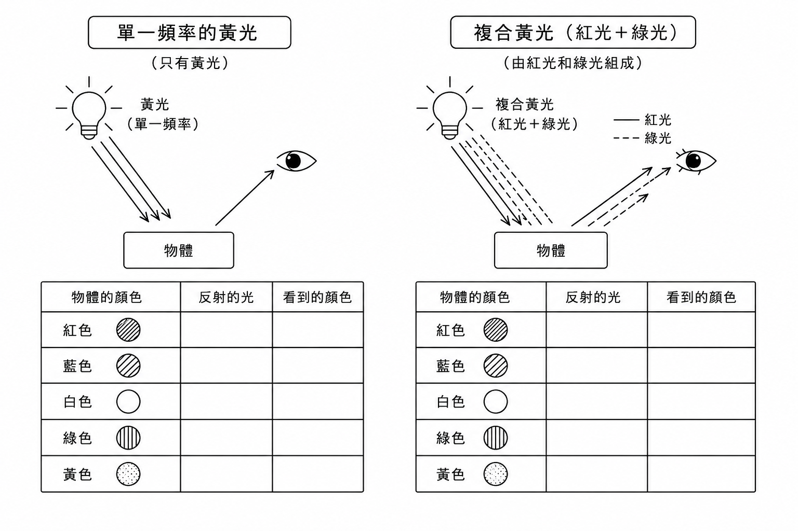

先看教材圖
請先觀察單一頻率黃光與複合黃光的差異，再完成下面的圖像判讀與概念練習。

色彩判讀速覽
物體的顏色和光源有關；能進入眼睛的反射光，會影響我們看到的顏色。
光源照射物體的光，決定物體有哪些色光可以反射。
反射光物體反射的光進入眼睛，我們才可能看見物體的顏色。
白色物體通常能反射照射到它的多種色光。
黑色物體通常吸收較多光，反射進入眼睛的光較少。
光源照射
物體反射
光進入眼睛
完成色彩判讀表格
請依照上方教材圖，選出每種物體反射的光，以及我們看到的顏色。
已完成練習名單
只顯示本單元完成狀態，不公開分數。